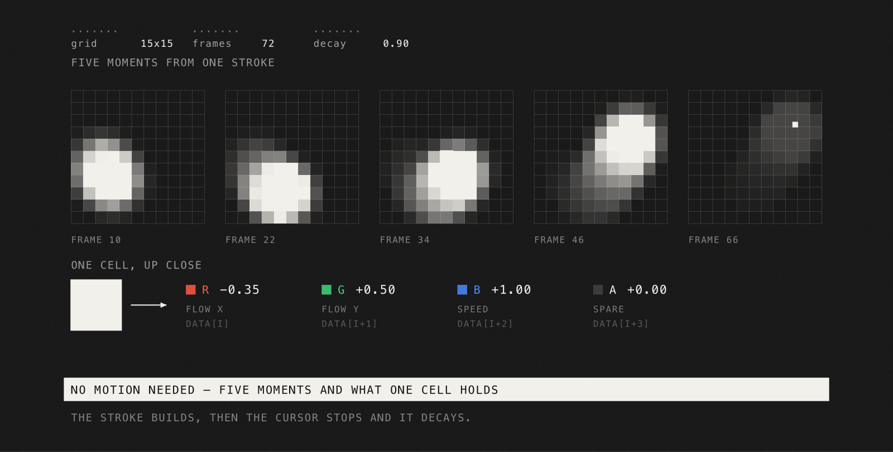

Do you want to level up your site’s interaction with only ten lines of code?
I love interactions on websites, and cursor trails are my favorite. They lift a site using the simplest and most-used interaction there is: the cursor. And you can apply one to anything on the page. 2D, 3D, an image, text, whatever you want.
But most trails I see nowadays are just a radial blob pushing pixels out of a circle. Simple, and repetitive.
What I want to bring to the table isn’t only a technique. It’s the intention behind it: combining what you learn from different places to reach a solution nobody else would. Mix maths and economics and you end up somewhere new. Here we mix custom shapes into a cursor trail.
Following that idea, we’ll focus on two parts:
The brush that stamps into that grid is the ten lines. Swap them and the whole mark changes.
Get ready to build with the beautiful Three.js and the modern WebGPU renderer with TSL. I also really recommend a visit to phobon’s great fragments-boilerplate, where you’ll find more techniques like this one.
Built with React Three Fiber, Three.js, drei and WebGPU.
Let’s start with the simple part: a scene running on the modern WebGPU renderer.
WebGPURenderer initialises asynchronously. R3F’s <Canvas gl={...}> accepts an async factory, but the frameloop starts right away, so the first frames render against a renderer that isn’t ready yet. The fix is two lines: start at frameloop="never" and flip to "always" once init() resolves.
const [frameloop, setFrameloop] = useState("never")
<Canvas
frameloop={frameloop}
orthographic
camera={{ position: [0, 0, 1] }}
gl={async (props) => {
const renderer = new WebGPURenderer(props)
await renderer.init()
setFrameloop("always")
return renderer
}}
>
<Sketch />
</Canvas>An orthographic camera and a single fullscreen quad. We’re writing a fragment shader, not building a 3D scene, so there’s nothing else in here.
To build this we’ll use a DataTexture. It lets you create a texture from a custom buffer of array data, which means we can build a grid of positions and store any value we want inside it.
const data = new Float32Array(4 * grid * grid)
const texture = new THREE.DataTexture(
data, grid, grid, THREE.RGBAFormat, THREE.FloatType
)
texture.minFilter = texture.magFilter = THREE.NearestFilterNearestFilter gives us that grid, pixelated look, since it picks the color of the nearest cell instead of blending between them.
Four float channels, RGBA, and we can use each one for whatever we want to create. This is why I like to use a DataTexture for velocity-driven interactions:
Good news: React Three Fiber already tracks the cursor for us.
state.pointer comes in normalized device coordinates: -1 to 1 on both axes, with the origin in the center of the canvas. The useful part is that its Y points up, same as our texture. DOM coordinates point down, so tracking the pointer by hand means flipping it yourself. R3F already did that for us.
const { pointer } = state
const x = (pointer.x + 1) * 0.5
const y = (pointer.y + 1) * 0.5The only thing we add is a pointerleave handler, so leaving the canvas on one side and coming back on the other doesn’t read as one huge movement.
Now the interesting part. How do we write into that buffer?
A Float32Array is flat. So basically we are just filling a list of numbers. Cell (x, y) starts at 4 (x + grid y), and R, G, B, A sit right after it.
4 * (x + grid * y) is how we address a cell in it.We also need to know how fast the cursor is going, which we get by comparing this frame’s position against the last one. Per frame, not per event, so it stays in sync with the render loop.
const vx = (x - prev.x) * grid
const vy = (y - prev.y) * grid
const speed = Math.hypot(vx, vy)
const centerX = x * grid
const centerY = y * gridThen we visit the cells around the cursor, measure how far each one is from the center, fade it out with distance, and write our three values in:
for (let cx = x0; cx <= x1; cx++) {
for (let cy = y0; cy <= y1; cy++) {
const dist = Math.hypot(cx + 0.5 - centerX, cy + 0.5 - centerY)
if (dist >= brushRadius) continue
const force = (1 - dist / brushRadius) ** falloff
const magnitude = strength * force * speed
const i = 4 * (cx + grid * cy)
data[i] += magnitude * (-vx / speed) // R
data[i + 1] += magnitude * (-vy / speed) // G
data[i + 2] = Math.min(1, data[i + 2] + magnitude) // B, clamped
}
}x0 and x1 just bound the loop to the cells the brush can reach, so a bigger grid doesn’t cost us anything.
That Math.min matters more than it looks. Without it, scrubbing slowly in one spot keeps adding forever and the whole area blows out to white.
force. The dashed box is the only region we visit.And notice that force is the only thing deciding the shape of the mark. Right now it’s a plain circular fade. Watch what happens if we replace it with ten lines that draw diagonal stripes instead:
const circle = () => 1That’s the default brush. It returns 1 everywhere, so the envelope does all the shaping and we get the round blob every cursor trail starts from.
I love decays. They make things feel natural and smooth, closer to how things behave in the real world. Basically we use time to raise or lower a value, and that is what takes a cursor trail from working to feeling right. Every cell dies off from 1 down to 0.
const k = decay ** (delta * 60)
for (let i = 0; i < data.length; i += 4) {
data[i] *= k; data[i + 1] *= k; data[i + 2] *= k
}Notice the delta. A flat multiply runs once per frame, so the trail would fade twice as fast on a 120Hz screen as on a 60Hz one. The exponent locks the fade to real time instead of to the refresh rate.

It all runs inside one useFrame. Fade first, then deposit, so the stroke you’re drawing right now lands at full strength:
useFrame((state, delta) => {
fade(data, delta)
deposit(data, state.pointer)
texture.needsUpdate = true
})That last line is the one everybody forgets. We changed a plain JavaScript array and three.js has no idea. needsUpdate tells it to re-upload the buffer for this frame.
We have a cursor writing into a grid. Now we need something for it to push around.
Anything you can rasterize works here: an image, an SVG, a video frame. I’m using plain text in this case.
The text goes onto an offscreen 2D canvas and becomes a CanvasTexture. White on black, because we’re not drawing it directly. We’re building a mask, and luminance() collapses each pixel down to a single value between 0 and 1.
Black gives us 0, white gives us 1, and we blend between two colors of our own with it. I’m calling them paper and ink, since the look I’m after is closer to print than to screen.
const source = texture(sourceTex, uv()).rgb
return mix(paper, ink, luminance(source))Now to the fun part. That DataTexture we’ve been filling? We hand the exact same object to the shader. The CPU writes it every frame, needsUpdate uploads it, and the shader reads fresh data on the next draw. That’s the whole connection.
We sample the field at the fragment’s own uv, pull the R and G channels back out as a vector, and offset the UV with it:
import { texture, uv, mix, Fn, luminance, uniform } from 'three/tsl'
import { MeshBasicNodeMaterial } from 'three/webgpu'
const material = new MeshBasicNodeMaterial()
const warpStrength = uniform(1.5) // A uniform stays live and can be updated!
material.colorNode = Fn(() => {
// 1. Read the R and G channels from our data texture
const flow = texture(trailTex, uv()).rg
// 2. Distort the original UVs using the flow velocity
const warpedUv = uv().add(flow.mul(warpStrength))
// 3. Read the text mask using the distorted UVs
const source = texture(sourceTex, warpedUv).rgb
return mix(paper, ink, luminance(source))
})()That’s it. Five lines, and the letters drag.
The trick is in the third line. Instead of reading the text at its own position, every fragment reads from wherever the cursor dragged it. Where the field is empty the flow is zero, the UV is untouched, and you get the plain word back. Where the cursor just passed, the flow pushes the read somewhere else and the letters follow.
One thing: warpStrength has to be a uniform(), not a plain JavaScript number. Fn() builds the graph once, so a number gets baked in as a constant and never changes again. A uniform stays live.
Run it and the distortion looks blocky. You can see the grid.
That’s NearestFilter. Two hundred cells, no blending, hard edges everywhere.
We could switch to LinearFilter and be done with it. But the grid has to stay sharp. Next section we start drawing patterns into it, and smoothing would wipe them out on the way in.
So we blur on the way out instead:
const r = blurRadius
const t = (dx, dy) => texture(trailTex, uv().add(vec2(dx, dy)))
const field = t(-r, -r).add(t(r, -r)).add(t(-r, r)).add(t(r, r))
.add(t(0, -r).mul(2)).add(t(-r, 0).mul(2))
.add(t(r, 0).mul(2)).add(t(0, r).mul(2))
.add(t(0, 0).mul(4))
.div(16)Nine samples in a 3x3, center weighted heaviest, divided by sixteen. A Gaussian blur. Swap texture(trailTex, uv()) for that and the distortion smooths out.
Remember that the shape of the brsuh is a function, so basically we can write different version of that unction as the brush we want to achieve.
Every brush works the same way:
force = envelope × pattern × scaleenvelope is the radial fade we already wrote, (1 - dist / brushRadius) ** falloff. It gives the brush a soft edge instead of ending in a hard circle. scale is a magnitude fix-up. Neither of them ever changes.
pattern is the only part that varies, and it’s a plain function:
const brush = (lx, ly, params) => 0..1lx and ly are local coordinates, normalized to the brush radius. (0, 0) is the center and the edges sit at -1 and 1. The function knows nothing about the cursor, the grid, or the shader. At zero the brush skips that point. At one it writes at full strength.
circle was the defaiult state of our brush, 1 everywhere so its pure soli. But nothing says a brush has to be solid. Here’s diagonal hatching instead:
const fract = (x) => ((x % 1) + 1) % 1
const hatch = (lx, ly, { repeat, thickness }) => {
const diagonal = (lx - ly) * Math.SQRT1_2
const stripe = fract(diagonal * repeat)
return stripe > thickness ? 1 : 0
}Swap it in and nothing else moves:
const force = envelope * hatch(lx, ly, { repeat: 6, thickness: 0.44 })Same grid, same cursor, same shader. A completely different mark.
And the great of this is you ca nactually change the brush as whatever shape you want, is like having an inercambialbe tip brush. Also playing with the blur we created earlier, each shape can deliver different outcomes.
const dots = (lx, ly, { repeat, size }) => {
const cx = fract(lx * repeat) - 0.5
const cy = fract(ly * repeat) - 0.5
return Math.hypot(cx, cy) <= size ? 1 : 0
}Same fract trick, now in two dimensions. We wrap both axes into a repeating grid, subtract a half to put the origin in the middle of each cell, and keep whatever falls inside a circle.
That’s the whole contribution. Pass it in and it picks up the envelope, the scale, the decay and everything downstream for free:
useTrailField({ brush: dots })Nothing else changes. Not the grid, not the shader, not the text.
useTrailField.And the pattern doesn’t have to be procedural. Load a PNG, read it into an ImageData once, and sample its alpha in the same lx, ly space. Now anything a designer can draw is a brush.
You can also play with the flow direction. Here we follow the cursor’s velocity, but you could for example point it perpendicular to that for a swirl.
Now lets add some color to our life.
We’ve only touched R and G so far. B has been holding speed this whole time, and reading it costs us nothing:
const composed = mix(paper, ink, textMask)
const speed = clamp(field.b, 0, 1)
const trailColor = ramp3(speed, red, yellow, orange)
const trail = trailColor.mul(speed).mul(trailIntensity)
return composed.add(trail)ramp3 is a small helper, It blends across three colors instead of two:
const ramp3 = (t, low, mid, high) => mix(
mix(low, mid, smoothstep(0, 0.5, t)),
high,
smoothstep(0.5, 1, t)
)So basically with this function we can manage the colors based on the speed. We pass in the speed value and it returns a color: red if the movement is slow, and if it moves fast it passes through yellow into orange.
Finally we can apply a mask to the text, so instead of painting everywhere the trail smoothly disappears when we move outside the letters.
const fxMask = mix(float(1), textMask, filterToText)
const trail = trailColor.mul(speed).mul(trailIntensity).mul(fxMask)
All together and we have a unique cursor trail. One thing I really do recommend when developing and creating new things is to use value panels to tweak the values of what you are creating, until you get the desired result.
The great thing about this is that you can expose a whole collection of inputs and just play with them. Tweak them in the panel and you run into happy accidents, things that end up somewhere nobody has been before.
It’s all about iteration. Create, iterate, mix it with other things you have created, iterate again, and you will end up creating new things that you can love and share.